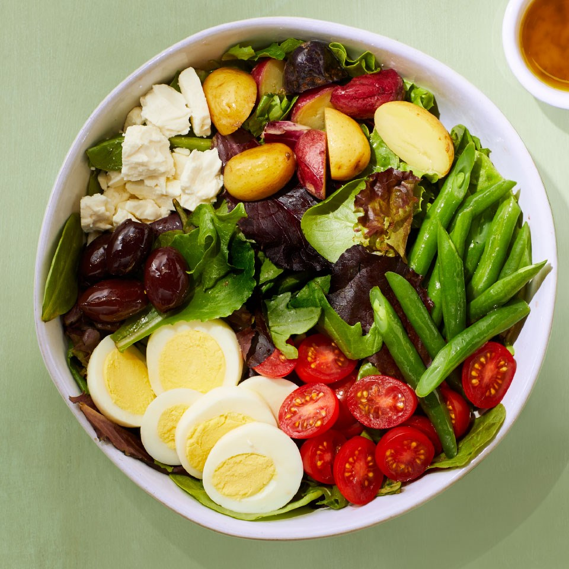

Vegetarian Niçoise Salad
Ingredients
- 3 cups spring mix salad greens
- 2 tablespoons lemon vinaigrette, divided (see Tip)
- ¼ cup steamed green beans
- ¼ cup diced cooked baby potatoes
- ¼ cup grape tomatoes, halved
- 1 large hard-boiled egg, sliced
- ½ ounce pitted Kalamata olives
- 2 tablespoons crumbled reduced-fat feta cheese ( ½ oz.)
Preparations
- Toss salad greens with 1 Tbsp. plus 1 tsp. vinaigrette and place on a 9-inch plate.
- Gently toss green beans and potatoes with the remaining 2 tsp. vinaigrette; arrange on top of the
salad greens. Top with tomatoes, egg, olives, and feta and serve.
- Tip: To make a quick homemade lemon vinaigrette, whisk 2 Tbsp. lemon juice with ½ tsp. minced garlic, ¼ tsp. dried thyme, and ⅛ tsp. each salt and pepper. Slowly whisk in ¼ cup extra-virgin olive oil until blended. Extra dressing will keep, covered, in the
refrigerator, for up to 5 days. Bring to room temperature before using.